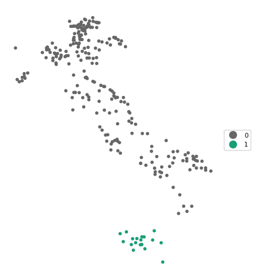
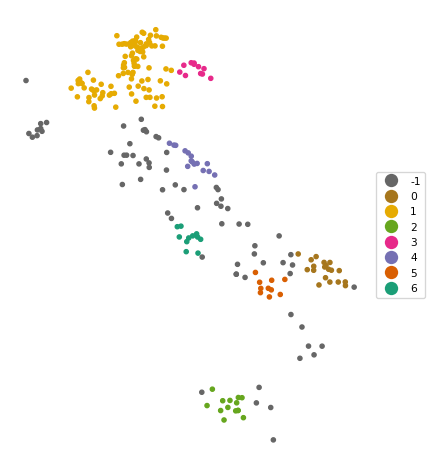
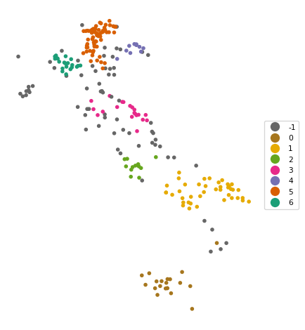

import geopandas as gpd
import numpy as np
from sklearn.cluster import DBSCAN, HDBSCAN
from spatial_cluster_helper import ensure_datasets, cluster_stats, cluster_map4 Density Based Clustering
Density-based cluster methods are designed to identify meaningful groupings in point data. GeoDa supports three familiar methods: DBSCAN, DBSCAN* and HDBSCAN. They are discussed in Chapter 20 of the GeoDa Explore Book. DBSCAN and HDBSCAN are implemented in the sklearn.cluster package, but not DBSCAN*.
To illustrate these methods, we follow Chapter 20 of the GeoDa Explore Book and use the locations of Italian community banks contained in the italy_banks sample data set.
In addition to the sklearn.cluster package mentioned, we will also need the familiar geopandas and numpy packages. As before, we will be using specialized helper functions developed to support the illustration and visualization of spatial clusters, contained in the spatial-cluster-helper package.
Required Packages
geopandas, numpy, sklearn.cluster, spatial-cluster-helper
Required Data Sets
italy_banks
4.1 Preliminaries
4.1.1 Import Required Modules
We import the relevant modules as mentioned above. Specifically, from sklearn.cluster, we import DBSCAN and HDBSCAN, and from spatial_cluster_helper, we import ensure_datasets, cluster_stats and cluster_map.
4.1.2 Load Data
We continue to use the same approach as before and assume that the data are contained in a ./datasets/ directory off the main directory. We use ensure_datasets to check on the presence of the data and then read the italy_banks.shp shape file into dfs.
# Setting data folder:
#path = "/your/path/to/data/"
path = "./datasets/"
# Select the Italy community banks point data:
shpfile = "italy_banks/italy_banks.shp"
# Load the data:
ensure_datasets(shpfile, folder_path = path)
dfs = gpd.read_file(path + shpfile)
print(dfs.shape)
print(dfs.head(3))(261, 102)
idd BankName City latitud \
0 1.0 Banca di Andria di Credito Cooperativo SocietÃ... ANDRIA 41.226694
1 8.0 Banca di Credito Cooperativo di Napoli-BCC di ... NAPLES 40.841020
2 9.0 Banca Adria Credito Cooperativo del Delta s.c.... ADRIA 45.052882
longitud COORD_X XKM COORD_Y YKM ID ... \
0 16.302685 1.112303e+06 1112.303366 4.589794e+06 4589.793823 1.0 ...
1 14.250822 9.427720e+05 942.771983 4.534476e+06 4534.475758 8.0 ...
2 12.056720 7.407057e+05 740.705695 4.993464e+06 4993.464408 9.0 ...
EXPE_16 EXPE_17 SERV_11 SERV_12 SERV_13 SERV_14 SERV_15 \
0 0.027966 0.025114 0.793877 0.775691 0.745046 0.630469 0.611941
1 0.023624 0.018840 0.770019 0.562623 0.540712 0.522125 0.601549
2 0.013770 0.012745 0.790542 0.626628 0.515733 0.358735 0.483700
SERV_16 SERV_17 geometry
0 0.640208 0.666425 POINT (1112303.366 4589793.823)
1 0.502599 0.625220 POINT (942771.983 4534475.758)
2 0.567946 0.608880 POINT (740705.695 4993464.408)
[3 rows x 102 columns]4.1.3 Variables
The density-based cluster methods use the point coordinates. In the italy_banks sample data set, with projected coordinates, these are converted to kilometers in the variables XKM and YKM for easier interpretation (the original coordinates are in meters). The scikit-learn functions require these as a numpy input array. In order to keep the code generic, we specify coords_array here. Using numpy.vstack, we create a 2 by n array, which we subsequently transpose (T) to get the input as a n by 2 array.
coords_array = np.vstack([dfs["XKM"], dfs["YKM"]]).T
print(coords_array[:3])[[1112.30336594 4589.79382325]
[ 942.77198327 4534.47575791]
[ 740.70569453 4993.46440835]]4.2 A Quick Introduction to scikit-learn
The most comprehensive Python library for classical machine learning is scikit-learn, imported as sklearn. Among its extensive functionality, it supports many methods for so-called unsupervised learning, which includes a wide range of clustering techniques. In this Companion, we will be using scikit-learn for all classic non-spatial clustering methods. The complete user guide for scikit-learn can be found at https://scikit-learn.org/stable/user_guide.html.
As it turns out, most spatially constrained clustering methods are currently not included in scikit-learn. For the latter methods, we will continue to rely on pygeoda, which supports a subset of the clustering functionality in GeoDa desktop.
Scikit-learn can be a bit overwhelming at first. Also, the interface may seem a bit strange, but it is fully consistent throughout (not a mean feat when supporting so many different methods). Once the basic principles become more familiar, the elegance of the framework becomes obvious. For our purposes, we can get away with only some basic knowledge.
The distinguishing characteristic of the scikit-learn design is that it is fully object oriented. Each type of clustering is represented by a class, which needs to be instantiated, i.e., a specific object of that class is generated. The class supports a range of methods and creates attributes. The main method, common to all classes in scikit-learn, is fit. In essence, this applies the clustering algorithm. The results are available as attributes of the object. For example, for all the clustering methods considered in scikit-learn, this is the attribute labels_ (don’t forget the underline), a simple numpy array with a label for each observation. It is then up to you to translate this into meaningful information, such as a cluster map. It is also important to remember that all input to scikit-learn consists of numpy arrays, not pandas data frames. This typically requires some additional work up front to get the data into the proper format.
Later, we will also see how sklearn.preprocessing supports a range of data transformations, including standardization. However, here we only consider clustering of point data, which should not be standardized. This is because standardization yields new coordinates with the same unit variance in the vertical and horizontal dimension. Unless the original dimensions are square, this will distort the distances. For example, in Italy, which has a much longer vertical dimension than horizontal dimension, distances computed from standardized coordinates will tend to compress vertical separation. This should be avoided, hence the use of coordinates in their original scale.
We return to the topic of standardization in Chapter 5.
4.3 DBSCAN
The principles of density-based clustering were formulated in the DBSCAN algorithm, originally described in Ester et al. (1996) and Sander et al. (1998), and more recently elaborated upon in Gan and Tao (2017) and Schubert et al. (2017). The method is discussed in detail in Chapter 20 of the GeoDa Explore Book.
The essence of the algorithm is to identify high-density subsets of the data, as an application of so-called bump hunting. This results in a classification of points as core, border and noise points, depending on how far they are from each other and how many points are contained within a critical distance (the density). These two items are critical parameters for the method.
The critical distance band is referred to as Epsilon distance. It plays a role similar to what the bandwidth achieves in a uniform kernel function and defines the area within which the frequency of points will be assessed. On the other hand, the minimum points criterion corresponds to the smallest number of points contained within the critical distance band to consider the spatial distribution to be dense. Note that in DBSCAN, the center point (around which the Epsilon distance is considered) is part of the minimum points. In other words, a minimum points criterion of 4 implies 3 nearest neighbors.
In our illustration, we will use the DBSCAN functionality from sklearn.cluster. Full details can be found at https://scikit-learn.org/stable/modules/clustering.html#dbscan.
4.3.1 Data Input
As mentioned, scikit-learn expects its input to consist of numpy arrays. In Section 4.1.3, we created coords_array as a n by 2 array, which we will use as the input to the fit method of DBSCAN.
4.3.2 Cluster Instance
Before we can carry out any analysis, we must create an instance of an object of the class DBSCAN. This takes two required arguments, eps, the Epsilon distance, and min_samples, the minimum number of points. In our example, matching the illustration of DBSCAN in the GeoDa Explore Book, we set eps = 124.66 and min_samples = 4 and create the object db_results. The result is an instance of the class DBSCAN, as revealed by a type command. In a typical application, the creation of the object and the application of the fit method can be chained, but we keep them separate for now.
db_results = DBSCAN(eps = 124.66, min_samples = 4)
print(type(db_results))<class 'sklearn.cluster._dbscan.DBSCAN'>4.3.3 Cluster fit Method
So far, we don’t have any actual results. These are obtained by applying the fit method to the cluster object. The fit method takes the numpy array with the x and y coordinates as input. After applying this method, a large number of attributes will be included in the cluster object. At this point, our main interest is in the attribute labels_, which contains the clustering designation of each of the community bank locations. As in Chapter 20 of the GeoDa Explore Book, this example does not contain any noise points (those would be labeled as -1). We only have labels 0 and 1, respectively with 242 and 19 members.
We use the numpy unique function to find the (unique) cluster labels and the respective size of the associated clusters.
db_results = db_results.fit(coords_array)
# at this point the cluster object contains many methods and attributes
print(dir(db_results))
# the cluster labels
print(type(db_results.labels_))
# a brief summary of the cluster categories
totclust,clustcount = np.unique(db_results.labels_, return_counts = True)
print(totclust)
print("number of different cluster categories (noise points included): ",
len(totclust))
print("cluster member size: ", clustcount)['__annotations__', '__class__', '__delattr__', '__dict__', '__dir__', '__doc__', '__eq__', '__firstlineno__', '__format__', '__ge__', '__getattribute__', '__getstate__', '__gt__', '__hash__', '__init__', '__init_subclass__', '__le__', '__lt__', '__module__', '__ne__', '__new__', '__reduce__', '__reduce_ex__', '__repr__', '__setattr__', '__setstate__', '__sizeof__', '__sklearn_clone__', '__sklearn_tags__', '__static_attributes__', '__str__', '__subclasshook__', '__weakref__', '_build_request_for_signature', '_doc_link_module', '_doc_link_template', '_doc_link_url_param_generator', '_estimator_type', '_get_default_requests', '_get_doc_link', '_get_metadata_request', '_get_param_names', '_get_params_html', '_html_repr', '_parameter_constraints', '_repr_html_', '_repr_html_inner', '_repr_mimebundle_', '_validate_params', 'algorithm', 'components_', 'core_sample_indices_', 'eps', 'fit', 'fit_predict', 'get_metadata_routing', 'get_params', 'labels_', 'leaf_size', 'metric', 'metric_params', 'min_samples', 'n_features_in_', 'n_jobs', 'p', 'set_fit_request', 'set_params']
<class 'numpy.ndarray'>
[0 1]
number of different cluster categories (noise points included): 2
cluster member size: [242 19]4.3.4 Cluster Statistics
It would be useful to create a small data frame that lists the labels for each cluster and the number of observations that belong to them. To accomplish this, we use the cluster_stats helper function from the spatial_cluster_helper module. We will reuse this for all future cluster methods, since scikit-learn will consistently put the cluster labels in the labels_ attribute (all scikit-learn computed results are labeled with a trailing underline character).
We can now apply cluster_stats to the output of our DBSCAN application. The only input is the array with cluster labels. The results shows the distribution of the cluster sizes for clusters 0 and 1. Note that unlike what holds for the GeoDa clustering methods, the cluster labels are given in no particular order (in GeoDa, they are sorted by size).
c_stats = cluster_stats(db_results.labels_) Labels Cardinality
0 242
1 194.3.5 Cluster Map
The results of a cluster exercise are best visualized in a so-called cluster map. Again, to save us time later, we use the cluster_map helper function to create a categorical point map for the cluster labels.
The arguments to cluster_map are the target layer that will show the label categories (in this case, the point layer contained in dfs), the array with cluster labels (labels_), an optional title, an optional baselayer (useful to provide context to a categorical point map), and an optional color map (cmap)
In our example, we use cmap = 'Dark2_r'. We have no base layer. Note that cluster_map assumes that the point and area layers are in the same projection (there is no check), which should be ensured by reprojection, if necessary, see Chapter 2.
cluster_map(dfs, db_results.labels_, title="", cmap='Dark2_r', legend_fontsize=8)

4.3.6 Sensitivity Analysis
The results of DBSCAN are very sensitive to the choice of the parameters eps and min_samples. When changing either one of these parameters in the DBSCAN function, the resulting clusters are typically affected. Below, we set eps = 50 and min_samples = 10 (following the example in Chapter 20 of the GeoDa Explore Book). Note how we now combine the instantiation of the DBSCAN class with the fit method in one line.
The result is quite different, with seven clusters identified, as well as 70 noise points.
db_results = DBSCAN(eps = 50, min_samples = 10).fit(coords_array)
c_stats = cluster_stats(db_results.labels_) Labels Cardinality
-1 70
0 19
1 110
2 14
3 11
4 16
5 10
6 11cluster_map(dfs, db_results.labels_, title="", cmap='Dark2_r', legend_fontsize=8)

4.4 HDBSCAN
The DBSCAN algorithm lacks some flexibility due to the use of the same critical distance for all points. This turns out to be problematic when the density of the points is very uneven. To remedy this issue, the DBSCAN* method introduced the concepts of core distance and mutual reachability distance. The core distance is the k-nearest neighbor distance for each point. The inverse of this concept (\(\lambda = 1/d_{core}\)) corresponds with the notion of density. The mutual reachability distance is a transformation of these core distances that pushes points in low-density regions further away. More specifically, the mutual reachability distance between points A and B is defined as: \[d_{mr}(A, B) = max[d_{core}(A),d_{core}(B),d(AB)].\] In DBSCAN, the mutual reachability distance takes on the role of the critical distance. DBSCAN is outlined in detail in Chapter 20 of the GeoDa Explore Book, but is currently not supported by sklearn.
A further refinement was implemented in HDBSCAN, where a flexible distance cut-off was introduced. As a result, only the minimum points criterion must be specified. The distance cut-off is based on a concept of persistence, an indication of the stability of each potential cluster. HDBSCAN was originally proposed by Campello, Moulavi, and Sander (2013) and more recently elaborated upon by Campello et al. (2015) and McInnes and Healy (2017). Extensive technical detail and a toy example are given in Chapter 20 of the GeoDa Explore Book.
The algorithm is implemented in the HDBSCAN class of sklearn.cluster (see https://scikit-learn.org/stable/modules/generated/sklearn.cluster.HDBSCAN.html). To instantiate an object of this class, the only required argument is the min_cluster_size argument, the minimum number of points in a cluster neighborhood. As before, we apply the fit method with as argument the numpy array of point coordinates. The cluster labels are again contained in the labels_ attribute.
We illustrate this using min_cluster_size = 10. We combine the class instantiation and fit method in one line and reuse our cluster_stats and cluster_map functions to summarize the results.
The results are quite reasonable, yielding seven clusters with sizes ranging from 10 to 67, as well as 69 noise points. As in the DBSCAN case, some experimentation with different parameter settings is highly recommended.
hdb_results = HDBSCAN(min_cluster_size = 10).fit(coords_array)
c_stats = cluster_stats(hdb_results.labels_) Labels Cardinality
-1 69
0 20
1 41
2 12
3 20
4 10
5 67
6 22cluster_map(dfs, hdb_results.labels_, title="", cmap='Dark2_r', legend_fontsize=8)

4.5 Practice
Use your own data set or one of the GeoDa Center or PySAL sample data sets to load a point data file. Compare the results between DBSCAN and HDBSCAN, and assess the impact of changing the relevant parameters.